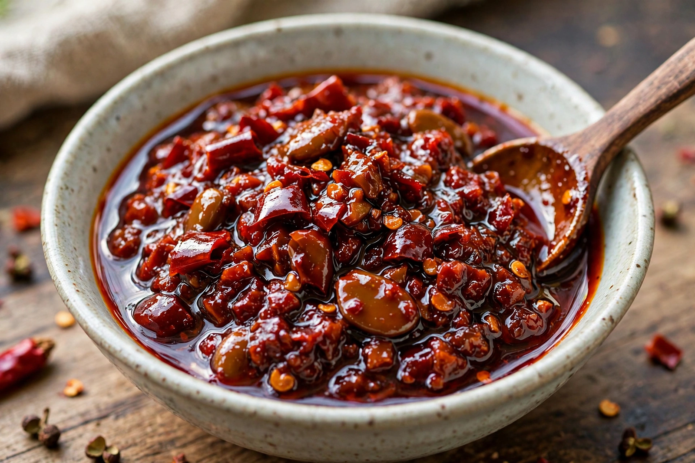

Doubanjiang (Chinese: 豆瓣醬; pinyin: dòubànjiàng) is a spicy, salty fermented paste made from broad beans (fava beans), soybeans, salt, rice, and various spices, most famously chili peppers. It is a cornerstone seasoning of Sichuan cuisine, sometimes called the "soul of Sichuan cooking." The most celebrated variety comes from Pixian (Pi County) in Chengdu, Sichuan, and is known as Pixian doubanjiang or Pixian douban.
| Doubanjiang | |
|---|---|
 | |
| Type | Fermented bean paste |
| Place of origin | China (Sichuan) |
| Main ingredients | Broad beans, chili peppers, salt, soybeans |
| Chinese name | 豆瓣醬 (dòubànjiàng) |
Traditional Pixian doubanjiang is made by fermenting broad beans inoculated with mold (similar to koji in Japanese miso production), then combining them with fresh red Erjingtiao chili peppers and a high proportion of salt in large earthenware vats. The vats are opened daily to expose the paste to sun and dew, and the mixture is stirred regularly. Fermentation and aging take at least a year, and premium grades are aged for three to eight years, developing a deep reddish-brown colour and a complex, savoury-spicy flavour. Pixian doubanjiang is protected as a geographical indication product in China.
Doubanjiang is typically bloomed in oil at the start of cooking, which turns the oil red and releases the paste's aroma. It is essential to dishes such as mapo tofu, twice-cooked pork (huíguō ròu), Sichuan hot pot broth, dan dan noodles' seasoning base, and shuizhu (water-boiled) dishes. A related non-spicy version, sweet bean paste (tianmianjiang), and plain broad-bean pastes are used in other regional Chinese cuisines.